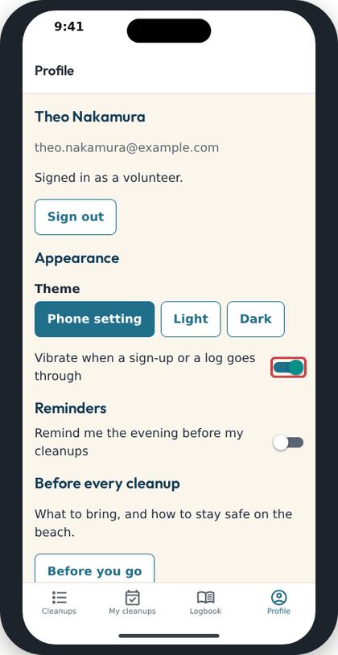
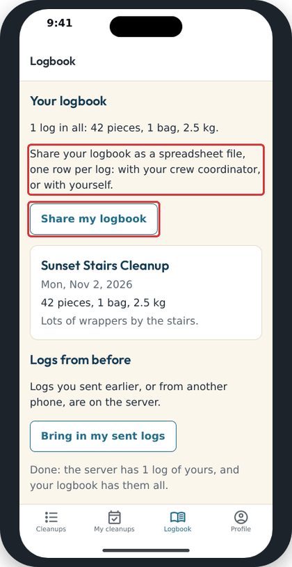

📳 Lesson 6.5: Haptics, Sharing and Files
A phone is something you hold. When Theo taps Sign up on a windy beach road with the screen half in sunshine, a short, crisp tap under his thumb says "done" before his eyes find the words. And at the end of a season, his logbook should not be trapped in the app: it should leave as a real file, a spreadsheet he can send to the crew's coordinator or keep for himself. Today Shoreline Crew learns both: feedback you can feel, used with restraint, and files it writes and hands to the phone's share sheet.
🎯 Learning Objectives
By the end of this lesson, you will be able to:
- Choose the right haptic for a moment with expo-haptics (or none at all), and say why a buzz is never the only feedback
- Respect the people holding the phone: an in-app switch for vibration, and the phone's own settings, on iPhone and Android
- Write a file with expo-file-system's
FileandDirectory, in the right folder, without breaking the web preview - Turn app data into a CSV file a spreadsheet opens correctly, with quoting, a byte order mark and a guard against formulas
- Hand a file to the share sheet with expo-sharing, and explain how that differs from Lesson 4.4's text sharing on each platform
📦 Code for this lesson
Starting code: lesson-24-start.zip · Finished code: lesson-24-end.zip. Each folder has a README with the commands to run it.
In This Lesson
👋 Welcome: An App You Hold
If you did last lesson's "Before the Next Lesson" task, you paid attention to where your phone vibrates under your thumb. Most of it you never noticed: the keyboard's tiny ticks, a switch that clicks into place, the firm double tap when a payment goes through. The best haptics are like that. They confirm, quietly, that the thing you did has happened, and they disappear when nothing needs saying. The worst ones buzz at everything, and you turn them off.
Web pages almost never do this; phone apps are expected to. The second half of today is something web pages do all the time and phones make strange: files. In the browser, "download a CSV" is a link. On a phone there is no Downloads folder in sight, the app lives in its own sealed set of folders, and getting a file out means handing it to the share sheet, the panel of apps and actions the phone offers. By the end of the lesson:
- Two moments buzz. A sign-up that went through, and a debris log saved on the phone, each with a "success" feel; a sign-up the API refused or a log form with mistakes gets an "error" feel. Nothing else buzzes.
- The volunteer decides. A Vibrate when a sign-up or a log goes through switch on the Profile tab, on by default, saved with the other settings; the phone's own settings still have the last word.
- The logbook leaves as a file. Share my logbook on the Logbook tab writes a CSV file (one row per log) into the app's cache with the expo-file-system you met in Lesson 6.2, and opens the share sheet with expo-sharing: Mail, Drive, Files, Messages, whatever the phone offers.
Why it matters for your work: "can we export this?" is one of the most common requests any app gets, and "it feels cheap" is one of the most common complaints about cross-platform apps. Both are about the phone as an object: what it feels like in the hand, and how your app's data joins the rest of someone's life. Teams that do these two things well get reviews that say "polished" without anyone being able to say why.
🌱 Feeling it is part of testing it
The web preview cannot vibrate and has no share sheet for files, so you will check the code there (the switch, the button, the file's rows) and the experience on your phone. That is not a weakness of your setup; it is how mobile work goes. A haptic you have only read about is a guess. Press the button on your phone ten times and you will know whether it feels right, and whether it is one too many.
📳 Feedback You Can Feel
Every iPhone since the iPhone 7 and most Android phones have a small, precise motor that can play a short "tap" instead of the long rattle of an old vibration. expo-haptics plays those taps. Its three cross-platform functions match the three kinds of moment Apple describes in its design guidelines:
import * as Haptics from 'expo-haptics';
export async function tour() {
// "It worked", "careful", "it did not work": three short patterns
await Haptics.notificationAsync(Haptics.NotificationFeedbackType.Success);
// A tap with weight: Light, Medium, Heavy, Soft or Rigid
await Haptics.impactAsync(Haptics.ImpactFeedbackStyle.Light);
// The faintest tick, for a value that changes under a finger (a picker, a slider)
await Haptics.selectionAsync();
}| Function | Says | A good moment | Shoreline Crew |
|---|---|---|---|
notificationAsync(Success / Warning / Error) | The result of something you did | A payment went through; a form was refused | Sign-up and debris log: Success or Error |
impactAsync(Light … Rigid) | Something touched something | A dragged card snaps into place; a pull to refresh reaches its point | Not used (Module 7's gestures could) |
selectionAsync() | A value changed under your finger | Each step of a picker wheel | Not used (a stepper could: Exercise 1 asks whether it should) |
performAndroidHapticsAsync(…) | Android's own effects: Confirm, Reject, Toggle_On, Keyboard_Tap and more | On Android, instead of the three above | On Android: Confirm and Reject |
Why a fourth function for Android? Reading expo-haptics' Android code answers it. The three cross-platform functions drive Android's vibration motor directly with short timed patterns (it is the Vibrator service, and the library's manifest adds the VIBRATE permission for it, one that never asks). Expo's own documentation for impactAsync says that is "not recommended for implementing haptics feedback" on Android and points to performAndroidHapticsAsync, which asks the screen's view to play one of Android's built-in effects, the same ones the system's keyboard and switches use. Those are tuned for each phone, and they are played the way the phone's touch feedback setting allows. So Shoreline Crew uses the system's Confirm and Reject on Android and Apple's Success and Error on iPhone: each platform's own words for the same two moments.
What the web preview does
expo-haptics has a web version, and reading it (then watching it, measured) shows what happens when you press a buzzing button in the web preview:
- Where the browser has
navigator.vibrate, expo-haptics calls it with a short pattern:[40, 100, 40](40 ms on, 100 off, 40 on) for Success,[60, 100, 60, 100, 60]for Error. Desktop Chrome has the function but no motor, so nothing happens; Chrome on an Android phone would really vibrate. - Safari on an iPhone has no
navigator.vibrate; the library then plays the tap Safari makes for a switch control, a small trick its source credits to an open-source project. - No error, no warning. You can check that your code asked for a buzz (this course's checks record the calls to
navigator.vibrate), but only a phone shows whether it feels right.
💡 Mental model: the tap on the shoulder
At a cleanup, the organizer does not shout "well done" across the beach every time someone fills a bag. When it matters (your bag is full, the tide has turned, the van is leaving), a quick tap on the shoulder says it without a word, and you look up to see what is going on. A haptic is that tap. It does not replace the words; it makes you look at them. And an organizer who tapped everyone's shoulder every minute would soon be ignored, or avoided.
🤝 Sparingly, and Never Alone
Apple's Human Interface Guidelines and Android's haptics guidance agree on a handful of rules (from their documentation), and Shoreline Crew follows all of them:
- Buzz for outcomes, not for presses. The button's own pressed look (Lesson 2.4) answers the press. The buzz comes when the result is known: the API said yes, the log is safe on the phone. A sign-up that is still waiting for a connection does not buzz yet.
- Mean the same thing every time. Success always feels like Success; Error is only for something that did not work. If a buzz could mean either, it means nothing.
- Never the only feedback. Some people cannot feel haptics (no motor, a case, a hand in a glove, a disability), and many turn them off. Every buzz in Shoreline Crew comes with words on the screen that a screen reader announces: "You are signed up. See you on the beach!", "Log sent. Thank you!", the message under a field. If you deleted every haptic, nobody would miss information, only a little pleasure.
- Less is more. Two moments in the whole app. A stepper that ticks on every press, a tab bar that thumps on every tab, a list that rattles while it scrolls: each feels fun for a minute and tiring for a season.
- Make it optional. Apple's guidelines say it directly: make haptics optional, so people can turn them off and still enjoy the app. Hence the switch.
Two layers of "off"
| Setting | Who changes it | What it stops |
|---|---|---|
| Shoreline Crew's Vibrate when a sign-up or a log goes through (new, on by default) | The volunteer, on the Profile tab | Every buzz from Shoreline Crew, on every platform. Your code checks it before each call. |
| iPhone: Settings > Sounds & Haptics > System Haptics | The person, for the whole phone | Haptics from UIKit's feedback generators, which expo-haptics uses on iPhone (Apple's documentation: they do not play when the person turned them off) |
| Android: Settings > Sound & vibration > Vibration & haptics (names vary by maker) | The person, for the whole phone | The system's touch feedback, which performAndroidHapticsAsync follows; a "use vibration and haptics" main switch on recent versions stops vibration altogether |
The two layers do different jobs. The phone's settings are all or nothing for every app; the in-app switch lets someone keep the keyboard's ticks and lose Shoreline Crew's. It is also the only switch you can test: the phone's own settings and how each model honors them are written here from Apple's and Google's documentation, and Step 7 has you check them on your phone.
📱 On your phone
Expo's documentation says expo-haptics works in Expo Go on both platforms, with no development build and no permission question. iPhones play haptics only while the app is in the foreground and only on models with a Taptic Engine; an iPad plays none (Apple's documentation). Android phones differ a lot: a high-end phone's Confirm is a crisp click, a budget phone's may be a short buzz, and a few play nothing for some effects. None of this could be felt on this course's machine (no phone, no emulator): Step 7 is where you find out how yours feels.
📄 Writing a File
Lesson 6.2 introduced expo-file-system to move photos out of the picker's cache: File, Directory, Paths.cache and Paths.document, and the rule "cache for things the phone may throw away, documents for things the volunteer would miss". Today you write a file: text you made, not a photo someone else made. The same classes do it:
import { File, Paths } from 'expo-file-system';
export async function tryAFile() {
const file = new File(Paths.cache, 'hello.txt'); // only an address so far
file.create({ overwrite: true }); // now an empty file (replacing an old one)
await file.write('Many hands, cleaner sands.\n');
console.log(file.uri); // file:///…/Caches/hello.txt (iPhone) or file:///data/…/cache/hello.txt
console.log(await file.text(), file.size, file.exists); // the text, 27, true
file.delete();
}new File(…)is only an address. Nothing exists on the phone untilcreate()(or a write) makes it;existstells you which.create({ overwrite: true })replaces a file that is already there. Without it,create()throws when the file exists, which is what you want when overwriting by accident would lose something.write()andtext()return Promises in SDK 58;writeSync()andtextSync()are their synchronous twins. For a file of a few kilobytes either is fine; the async ones never hold up the screen.
Which folder? A file made only to be shared goes in the cache. The share sheet hands it to another app, which makes its own copy (an attachment, a file in Drive); Shoreline Crew does not need it afterwards, and if the phone clears the cache to save space, nothing is lost: the logbook is still in SQLite, and the next press writes the file again. Shoreline Crew keeps its exports in a folder of their own, exports/, and empties it before writing a new one, so there is never more than one.
The web has no files
One trap is worth learning before it bites. expo-file-system's web version is a stand-in that warns "expo-file-system is not supported on web" and does nothing useful, and reading Paths.cache or Paths.document on the web throws. Lesson 6.2 met this and gave photoFiles.ts a .web.ts twin. Today's file takes a different, smaller route: it never touches Paths on the web at all. Two habits make that work:
- No
File,DirectoryorPathsat the top level of a module. Create them inside the function that uses them. A top-levelnew Directory(Paths.cache, 'exports')runs when the module is imported, which on the web means the whole Logbook screen fails to load (measured: see Common Mistakes). - Check the platform before the first file call, like Lesson 6.4's
remindersWork, and give the web preview something honest to show instead.
📊 A File a Spreadsheet Trusts
Which format? For people who will open the logbook in a spreadsheet (a coordinator adding up a season, a volunteer keeping a record), CSV: comma-separated values, plain text that Numbers, Excel, Google Sheets and LibreOffice all open. It looks too simple to get wrong, and that is exactly how it goes wrong. A volunteer's note is free text, typed on a phone keyboard, and it can contain anything:
A note from the debris-log form
Bottles, cans and 2 "lost" flip-flops.
Café cups too.A comma, quotes, a line break and an accented letter. Joining the fields with commas, the obvious first try, gives this (measured: the course ran both versions and read them back with a CSV parser, as a spreadsheet would):
Expected output (the naive version)
Cleanup,Date,Pieces,Bags,Weight (kg),Note
Sunset Stairs Cleanup,2026-11-07,42,1,2.5,Lots of wrappers by the stairs.
Weekend Cove Cleanup,2026-11-14,63,2,4.1,Bottles, cans and 2 "lost" flip-flops.
Café cups too.
Tide Pool Morning Cleanup,2026-11-15,12,1,0.8,=HYPERLINK("http://example.com","Open")The parser saw 6 cells in the heading and 7, 1 and 7 in the rows: the comma in the note started a new column, the line break started a new row, and the last note split in two. The fix is the format's own rule (RFC 4180, the CSV standard): put text in double quotes, write a quote inside it as two quotes, and a comma or a line break inside quotes is just text. Shoreline Crew's version adds two more things:
Expected output (Shoreline Crew's version)
"Cleanup","Date","Pieces","Bags","Weight (kg)","Note"
"Sunset Stairs Cleanup","2026-11-07",42,1,2.5,"Lots of wrappers by the stairs."
"Weekend Cove Cleanup","2026-11-14",63,2,4.1,"Bottles, cans and 2 ""lost"" flip-flops.
Café cups too."
"Tide Pool Morning Cleanup","2026-11-15",12,1,0.8,"'=HYPERLINK(""http://example.com"",""Open"")"- Every row has 6 cells (measured), the note keeps its comma, its quotes and its line break, and numbers stay numbers (no quotes), so a spreadsheet can add them up.
- A byte order mark first. The file starts with an invisible character,
\uFEFF, that tells spreadsheet apps the text is UTF-8. Without it, Excel in particular may open "Café" as "Café". (You cannot see it in the box above; it is there in the file.) - A guard against formulas. Look at the last note: it starts with
=. A spreadsheet treats a cell that starts with=,+,-or@as a formula, and formulas can fetch web pages or worse: this is called CSV injection (or formula injection), and OWASP, the web security project, lists it. Notes are typed by people, so Shoreline Crew puts a'in front of text that starts like that, and the spreadsheet shows it as text. - Lines end with
\r\n, as the standard says; every spreadsheet also reads plain\n, but the standard is the safe bet for files that travel.
🛑 What leaves the phone
A shared file goes wherever the volunteer sends it, and you cannot call it back. Put in only what the person expects to share: the logbook's cleanups, dates, amounts and notes. No volunteer ids, no session token, no email addresses of other people. Lesson 9.4's privacy details will ask what data your app shares and with whom; "the volunteer shares their own logbook, by choice" is an easy answer to give.
⚠️ Common Mistakes
The first two were made on purpose in a copy of the finished project and measured in the web preview; the others come from reading the libraries' code and the platforms' guidelines, because only a phone can show them.
⚠️ A File or Directory at the top of a module
It reads naturally to put the folder next to the other constants, as photoFiles.ts does:
// Don't (in a file the web preview also loads): this runs the moment the module is imported
const exportsFolder = new Directory(Paths.cache, 'exports');On a phone it works. In the web preview, the Logbook tab turns into a blank page, the browser's console says this.validatePath is not a function, and Metro's terminal shows where it came from (your line number may differ):
Expected output
expo-file-system is not supported on web
expo-file-system is not supported on web
Metro error: this.validatePath is not a function
Code: Directory.js
26 | */ constructor(...uris){
27 | super(Paths.join(...uris));
> 28 | this.validatePath();
| ^
29 | }
30 | /*
31 | * Directory containing the file.
Call Stack
constructor (node_modules/expo-file-system/build/Directory.js:28:14)
get__cache (node_modules/expo-file-system/build/Paths.js:8:16)
<global> (src/storage/logbookExport.ts:41:41)
<global> (src/components/ShareLogbook.tsx:6)Read the call stack from the bottom: ShareLogbook.tsx imported logbookExport.ts, whose line 41 read Paths.cache, which built a Directory, whose web stand-in has no validatePath. Nobody pressed anything: importing was enough, and because the Logbook screen imports the component, the whole tab fails (measured: the exported web preview answers /logbook with a 500 error, a blank page when you tap the tab). photoFiles.ts gets away with it only because the web never loads it: it has a .web.ts twin. Create files and folders inside the functions that use them, as Step 5 does.
⚠️ Asking only isAvailableAsync()
A tidy-looking shareLogbook checks if (!(await Sharing.isAvailableAsync())) and nothing else. In this course's Chromium (on Linux) the web preview still shows the fallback, by luck: there is no navigator.share, so the answer is false. Chrome on Windows and macOS, and Safari, do have navigator.share. Measured by giving Chromium one: isAvailableAsync() said yes, the app went on to write the file, and the volunteer saw "Could not share your logbook. Try again in a moment." while the console said:
Expected output (browser console)
expo-file-system is not supported on web
expo-file-system is not supported on web
Could not share the logbook TypeError: this.validatePath is not a functionisAvailableAsync() answers "is there a share sheet?", not "can this app write a file?". On the web the first can be yes while the second is always no, so the platform check comes first.
⚠️ Sharing a link (or text) with expo-sharing
Sharing.shareAsync('https://…') type-checks: the first argument is a string. Reading the library's Android code, it then refuses with "Only local file URLs are supported (expected scheme to be 'file', got 'https')", and a file: address outside the app's own folders gets "Not allowed to read file under given URL." Words and links go through React Native's Share.share (Lesson 4.4); files through expo-sharing.
⚠️ Deleting the file as soon as shareAsync resolves
It looks tidy: share, then file.delete(). But shareAsync resolves when the sheet closes, and on Android that is when the chooser hands over (read in its code), while the receiving app may read the file a little later: a mail app attaching it, a cloud app uploading it in the background. Delete it then and the attachment may arrive empty or not at all. That is why Shoreline Crew deletes the previous export before writing the next one, and lets the cache take care of the last one.
⚠️ Buzzing on the press
onPress={() => { feel('success'); signUp.mutate(event.id); }} buzzes "done" before anything is done. Offline, the sign-up waits for a connection (Lesson 5.2) while the volunteer's thumb has already been told it worked; if the API then says the cleanup is closed, the phone has lied. No tool catches this one: it is a design mistake. Put the buzz where the result is, in onSuccess and onError, and let the button's pressed look answer the press.
🛠️ Project: A Buzz and a Logbook File
You install expo-haptics and expo-sharing, give the volunteer a vibration switch, write one small feel() function and use it in exactly two places, then turn the logbook into a CSV file and hand it to the share sheet. Then you check the code in the web preview and the experience on your phone.
Step 1: Install expo-haptics and expo-sharing (5 min)
Stop Metro with Ctrl+C (also Ctrl+C on a Mac), then install both in one command. expo-file-system is already a dependency since Lesson 6.2.
npx expo install expo-haptics expo-sharingExpected output
env: load .env.local
env: export EXPO_PUBLIC_API_URL
› Installing 2 SDK 58.0.0 compatible native modules using npm
> npm install
added 2 packages, and audited 823 packages in 3s
...
› Added config plugin: expo-sharingVersion 58.0 of each, the ones SDK 58 expects. The last line added an entry to app.json:
}
- ]
+ ],
+ "expo-sharing"
],As The Share Sheet, for Files said, this plugin is for files shared into an app, and without options it changes nothing; leave it. expo-haptics needs no entry: its Android manifest brings the VIBRATE permission, which phones grant without a question, and iPhones need nothing.
Step 2: A vibration setting (10 min)
The settings store from Lesson 5.3 gets its third setting, exactly the way Lesson 6.4 added remindersOn: the type, the default, and a check of what was saved. In src/state/settings.ts:
remindersOn: boolean;
+ /** A short buzz when a sign-up or a debris log goes through (on until the volunteer says no) */
+ hapticsOn: boolean;
};
// ...
-const defaults: Settings = { theme: 'system', remindersOn: false };
+const defaults: Settings = { theme: 'system', remindersOn: false, hapticsOn: true };
const themeChoices: ThemeChoice[] = ['system', 'light', 'dark'];
// ...
'remindersOn' in value && typeof value.remindersOn === 'boolean' ? value.remindersOn : undefined;
+ const hapticsOn =
+ 'hapticsOn' in value && typeof value.hapticsOn === 'boolean' ? value.hapticsOn : undefined;
return {
// ...
remindersOn: remindersOn ?? defaults.remindersOn,
+ hapticsOn: hapticsOn ?? defaults.hapticsOn,
};- On by default. A buzz is not a question that needs a yes (unlike a notification), and both platforms play haptics without a permission. The default only decides who has to act: people who dislike it turn it off once.
- Settings saved before this lesson have no
hapticsOn, and get the default; anything that is not a boolean does too. Lesson 6.4's "each setting on its own" pays off: one more line, and old phones are safe.
Then the switch, on the Profile tab under the theme choice, with the SwitchRow from Lesson 2.4. In src/app/(tabs)/profile.tsx:
import { Screen } from '@/components/Screen';
+import { SwitchRow } from '@/components/SwitchRow';
import { signOut } from '@/auth/session';
// ...
/>
+ {/* On by default; the phone's own vibration settings still have the last word */}
+ <SwitchRow
+ label="Vibrate when a sign-up or a log goes through"
+ value={settings.hapticsOn}
+ onValueChange={(hapticsOn) => changeSettings({ hapticsOn })}
+ />
{/* Off until the volunteer turns it on: only then does the phone ask about notifications */}The label says what the switch does in the volunteer's words ("when a sign-up or a log goes through"), not in the developer's ("haptics"). It is also the switch's accessible name, so a screen reader reads the same sentence.

Step 3: One feel(), in two places (15 min)
Create src/utils/haptics.ts. Every buzz in the app goes through it, so the setting and the platform choice live in one place:
// Feedback you can feel (new): a short buzz when something the volunteer did has gone through, or
// has not. Never the only feedback: every buzz comes with words on the screen.
import {
AndroidHaptics,
NotificationFeedbackType,
notificationAsync,
performAndroidHapticsAsync,
} from 'expo-haptics';
import { Platform } from 'react-native';
import { readSettings } from '@/state/settings';
export type Feeling = 'success' | 'error';
/** A short buzz that says "done" or "that did not work"; nothing when the volunteer turned it off */
export function feel(feeling: Feeling): void {
if (!readSettings().hapticsOn) {
return;
}
const buzz =
Platform.OS === 'android'
? // Android's own haptic effects, played the way the phone's touch feedback setting allows
performAndroidHapticsAsync(
feeling === 'success' ? AndroidHaptics.Confirm : AndroidHaptics.Reject,
)
: // The iPhone's Taptic Engine (in a browser: navigator.vibrate, where there is one)
notificationAsync(
feeling === 'success'
? NotificationFeedbackType.Success
: NotificationFeedbackType.Error,
);
// A buzz that could not play is never worth an error: the words on the screen say it all
buzz.catch(() => {});
}Feelinghas two values on purpose. A third ("warning") would need a moment that is neither success nor failure, and Shoreline Crew has none yet. Adding one later is a one-line change, and TypeScript will show everyfeel()call that should think about it.readSettings()(Lesson 6.4) reads the switch outside a component, at the moment of the buzz, so a change on Profile counts at once.- Android plays its own
ConfirmandReject; everything else (iPhone, and the web preview) plays Apple'sSuccessandErrornotification patterns. feel()does not return the Promise, and it swallows failures. A buzz that did not play (an old phone, an iPad, the web) is not something the volunteer can do anything about, and the words on the screen already said what happened.
Now the two moments. A sign-up buzzes when the API has answered. TanStack Query's mutate takes callbacks for one call as its second argument, next to the screen's own (Lesson 5.2). In src/components/SignupPanel.tsx:
import { toDateString } from '@/utils/format';
+import { feel } from '@/utils/haptics';
// ...
cancel.reset();
- signUp.mutate(event.id);
+ // A buzz when the API has answered, next to the words that change on screen
+ signUp.mutate(event.id, {
+ onSuccess: () => feel('success'),
+ onError: () => feel('error'),
+ });
}}A full cleanup's Join the waiting list is the same button and buzzes Success too: the request went through, and the words say "You are on the waiting list". Cancel my sign-up stays quiet: cancelling is not a moment to celebrate, and its words are enough. Callbacks passed to mutate run only while the panel is on screen, which is what a buzz needs: a volunteer who left the screen should not feel a sign-up they cannot see.
The debris log buzzes when the form hands the log to the queue, and when the form has mistakes. handleSubmit from React Hook Form takes a second function for the invalid case (as in the web course). In src/app/log/[id].tsx:
import { formatDate, toDateString } from '@/utils/format';
+import { feel } from '@/utils/haptics';
// ...
// The log goes into the queue (saved on the phone at once), and the queue sends it if it can.
- const send = handleSubmit((data) => {
- const log = toNewLog(data, clientId, new Date());
- addLog(viewer, { event, log }, photos);
- setHandedOver(log);
- void sendWaitingLogs(viewer);
- });
+ // A buzz says "saved" or "look at the form", while the screen says what happened.
+ const send = handleSubmit(
+ (data) => {
+ const log = toNewLog(data, clientId, new Date());
+ addLog(viewer, { event, log }, photos);
+ setHandedOver(log);
+ feel('success');
+ void sendWaitingLogs(viewer);
+ },
+ () => feel('error'),
+ );
Why Success when the log is only saved, perhaps with no signal? Because that is the volunteer's moment: the log is safe on the phone and will be sent by itself (Lesson 5.5), and the screen says which ("Log sent. Thank you!" or "Saved on this phone"). The queue sending it later, in the background, does not buzz: the volunteer may be driving home.
Step 4: The logbook as CSV (15 min)
Create src/storage/logbookExport.ts, next to the logbook it reads. Start with the imports (the next step uses the rest) and the CSV text:
// The logbook as a file (new): a spreadsheet file (CSV) the volunteer can send to the crew's
// coordinator, keep in a Files app, or open in a spreadsheet. Written to the app's cache, then
// handed to the phone's share sheet.
import { Directory, File, Paths } from 'expo-file-system';
import * as Sharing from 'expo-sharing';
import { Platform } from 'react-native';
import type { LogbookEntry } from '@/storage/logbook';
import { toDateString } from '@/utils/format';
const columns = ['Cleanup', 'Date', 'Pieces', 'Bags', 'Weight (kg)', 'Note'];
// One cell. Numbers as they are; text in quotes with every quote doubled, so a comma, a quote or a
// line break in a note stays inside its cell. Text that starts like a formula (= + - @) gets a '
// in front: a spreadsheet would otherwise run it as one.
function cell(value: string | number): string {
if (typeof value === 'number') {
return String(value);
}
const text = /^[=+\-@\t\r]/.test(value) ? `'${value}` : value;
return `"${text.replaceAll('"', '""')}"`;
}
/** The logbook as CSV text: a row of column names, then one row per log */
export function logbookCsv(entries: LogbookEntry[]): string {
const rows = entries.map((entry) => [
entry.eventTitle,
entry.eventDate,
entry.pieces,
entry.bags,
entry.weightKg,
entry.note,
]);
const lines = [columns, ...rows].map((row) => row.map(cell).join(','));
// A byte order mark (\uFEFF) first tells spreadsheet apps the text is UTF-8: without it,
// "Café" may open as "Café"
return `\uFEFF${lines.join('\r\n')}\r\n`;
}cellis the whole of A File a Spreadsheet Trusts in a few lines: numbers bare, text quoted with quotes doubled, a'before text that starts like a formula. The regular expression/^[=+\-@\t\r]/matches those first characters (and a tab or carriage return, which some spreadsheets also treat specially).logbookCsvtakes theLogbookEntryrows thatreadLogbookalready gives the Logbook screen (Lesson 5.3), so it needs no SQL of its own. It is a plain function of its input: easy to test in Lesson 8.2, and it runs anywhere, the web preview included.replaceAllneeds no import: it is part of JavaScript, and Hermes has it.
Step 5: Write the file and share it (15 min)
At the end of the same file, add the two functions that touch the phone:
/** Write the logbook to a new file, named with today's date: shoreline-logbook-YYYY-MM-DD.csv */
export async function writeLogbookFile(entries: LogbookEntry[]): Promise<File> {
// Files made only to be shared go in the cache: the phone may empty it, and that is fine.
// Made here, not at the top of the file: on the web, Paths.cache throws as soon as it is read.
const folder = new Directory(Paths.cache, 'exports');
// One export at a time: the last one is deleted now, not right after sharing it, because the
// app it went to may still be reading it
if (folder.exists) {
folder.delete();
}
folder.create();
const file = new File(folder, `shoreline-logbook-${toDateString(new Date())}.csv`);
file.create();
await file.write(logbookCsv(entries));
return file;
}
/**
* Write the logbook file and open the share sheet with it. Resolves once the sheet has closed:
* 'done' (whether or not the volunteer picked an app: the phone does not say), or 'unavailable'
* where files cannot be shared (always in the web preview).
*/
export async function shareLogbook(entries: LogbookEntry[]): Promise<'done' | 'unavailable'> {
// The web has no files for the app to write, and expo-sharing shares web addresses there
if (Platform.OS === 'web' || !(await Sharing.isAvailableAsync())) {
return 'unavailable';
}
const file = await writeLogbookFile(entries);
await Sharing.shareAsync(file.uri, {
mimeType: 'text/csv', // Android: which apps to offer; iPhone: the file's type
UTI: 'public.comma-separated-values-text', // the same type, in Apple's words
dialogTitle: 'Share your logbook', // the title of Android's share sheet
});
return 'done';
}writeLogbookFilemakes theexportsfolder inside the function (the first mistake), empties it, and writes one file named with today's date, so the person who receives it seesshoreline-logbook-…csvwith a date in its name, notexport(3).csv.toDateStringis the helper Lesson 1.3 copied from the web course.shareLogbookchecks the platform before anything else, then whether a share sheet exists (expo-sharing's documentation keepsisAvailableAsyncfor that), then writes and shares. It returns what the screen needs to know, and nothing it cannot know: "done" means the sheet closed.mimeType: 'text/csv'tells Android which apps to offer; on an iPhone, the type comes fromUTI, herepublic.comma-separated-values-text, Apple's identifier for CSV.dialogTitleis the title of Android's chooser (an iPhone's sheet has none).- Errors are not caught here: a full disk or a second press while a sheet is open (Android's code refuses it: "Another share request is being processed now.") rejects the Promise, and the component decides what to say.
Step 6: Share my logbook (10 min)
Create src/components/ShareLogbook.tsx:
import { useState } from 'react';
import { AppText } from '@/components/AppText';
import { Button } from '@/components/Button';
import type { LogbookEntry } from '@/storage/logbook';
import { logbookCsv, shareLogbook } from '@/storage/logbookExport';
type ShareLogbookProps = {
entries: LogbookEntry[];
};
type ShareStep =
| { step: 'ready' }
| { step: 'working' }
| { step: 'no-sheet'; csv: string }
| { step: 'failed' };
// Share the logbook as a spreadsheet file (new). Where files cannot be shared, the volunteer
// still gets the same rows, as text to copy.
export function ShareLogbook({ entries }: ShareLogbookProps) {
const [state, setState] = useState<ShareStep>({ step: 'ready' });
async function share() {
setState({ step: 'working' });
try {
const result = await shareLogbook(entries);
setState(
result === 'done' ? { step: 'ready' } : { step: 'no-sheet', csv: logbookCsv(entries) },
);
} catch (error) {
console.warn('Could not share the logbook', error);
setState({ step: 'failed' });
}
}
return (
<>
<AppText>
Share your logbook as a spreadsheet file, one row per log: with your crew coordinator, or
with yourself.
</AppText>
<Button
label={state.step === 'working' ? 'Preparing the file…' : 'Share my logbook'}
disabled={state.step === 'working'}
onPress={share}
/>
{state.step === 'no-sheet' && (
<>
<AppText accessibilityLiveRegion="polite">
Files cannot be shared here (the web preview never can). On your phone, this button
opens the share sheet with the file. These are its rows, ready to copy:
</AppText>
{/* The same text as the file, without the mark at its start that only spreadsheets need */}
<AppText variant="muted" selectable>
{state.csv.replace('\uFEFF', '').trim()}
</AppText>
</>
)}
{state.step === 'failed' && (
<AppText variant="error" accessibilityRole="alert">
Could not share your logbook. Try again in a moment.
</AppText>
)}
</>
);
}- Four steps in one union type, as in Lesson 6.1's permission steps: ready, working (the button says Preparing the file… and cannot be pressed twice), no sheet, failed.
- Where there is no share sheet, the volunteer is not left with nothing: the same rows, as
selectabletext to copy, like Lesson 4.4's link fallback. The byte order mark is for spreadsheets only, so it is removed from the text on screen. - A failure gets a plain sentence for the volunteer and the details in the console for you (
console.warn, asloadSettingsdoes).
Show it in the logbook, under the totals, only when there is something to share. In src/app/(tabs)/logbook.tsx:
import { Screen } from '@/components/Screen';
+import { ShareLogbook } from '@/components/ShareLogbook';
import { useSession } from '@/hooks/useSession';
// ...
)}
+ {entries.length > 0 && <ShareLogbook entries={entries} />}
{entries.map(entry)}
Step 7: Check it, then feel it (15 min)
Start shoreline-api in one terminal and npx expo start in another. Run npx tsc --noEmit and npx expo lint: both should print nothing but the env: lines. Then, in the web preview (w):
- Profile: the new switch is on. Turn it off, reload the page: still off (saved). Turn it on again.
- Sign in as
theo.nakamura@example.com(passwordshoreline-demo), open the Logbook tab and press Bring in my sent logs. Share my logbook appears under the totals. - Press it: the web preview says files cannot be shared here and shows the file's rows.

Now on your phone, in Expo Go (with your computer's address in .env.local, Lesson 5.1):
- Sign up for a cleanup with open spots: one short "success" tap as "You are signed up" appears. Cancel, and sign up again: the same. Turn the Profile switch off and sign up once more: nothing, and the words still say it all.
- Open the debris log for today's cleanup (in the sample data, Theo has a spot at it: Log what you collected on its screen), type
lotsas the weight and press Send the log: an "error" feel next to the field message. Fix it and send: success. - Turn off haptics for the whole phone (iPhone: Settings > Sounds & Haptics > System Haptics; Android: Settings > Sound & vibration > Vibration & haptics, names vary) and sign up again: per the platforms' documentation, nothing plays even with Shoreline Crew's switch on. Turn it back on.
- Logbook > Share my logbook: the share sheet opens with
shoreline-logbook-and today's date. Mail it to yourself, or on an iPhone choose Save to Files, and open it in a spreadsheet app: one row per log, a column per field. - The real test: send a debris log whose note has a comma, "quotes" and a second line, share the logbook again and open it. The note should sit in one cell.
If something differs on your phone (a buzz you cannot feel, an app missing from the sheet), write down the model and what you saw: haptics and share sheets are where phones differ most, and noticing that is part of the job.
✅ Project Completion Checklist
- expo-haptics and expo-sharing are installed with
npx expo install, andapp.jsonlistsexpo-sharing - Profile has a Vibrate when a sign-up or a log goes through switch, on by default and saved with the other settings
- A sign-up and a saved debris log buzz Success, a refused sign-up and a form with mistakes buzz Error, and nothing else buzzes; each comes with words on the screen
- Share my logbook writes
exports/shoreline-logbook-…csvin the cache and opens the share sheet on your phone; the web preview shows the rows instead - A note with a comma, quotes and a line break stays in one cell when the file is opened in a spreadsheet
npx tsc --noEmitandnpx expo lintpass
Your own app: list the two or three moments in your final project's app that deserve a buzz, and the one thing a user would want to take out of it as a file (a CSV, a JSON backup, a PDF receipt). You will reuse feel() and the export pattern there.
🏋️ Hands-on Exercises
Optional, but recommended: each one takes five to fifteen minutes. Undo code changes afterwards; the next lesson starts from the project as Step 7 left it.
🏋️ Exercise 1: Buzz or no buzz?
Theo has the vibration switch on. Without running anything, say whether each of these buzzes, and which feel:
- He presses Join the waiting list on a full cleanup, and the API puts him on the list.
- He presses Sign up with no signal, puts the phone in his pocket, and the sign-up goes through ten minutes later while the cleanup's screen is still open.
- He presses Cancel my sign-up.
- He presses the plus button of a debris counter five times.
- His saved log is sent by the queue when the phone finds a signal on the drive home.
- Should the stepper in item 4 buzz with
selectionAsync()? Argue both sides.
💡 Hint
Find every feel( in the project (your editor's search, or grep -rn "feel(" src). Then ask, for each case, whether that line runs, and when.
✅ Solution
(1) Success: the request went through, and the words say "You are on the waiting list". (2) Success, ten minutes later: the paused mutation runs when the connection is back, and its onSuccess runs because the panel is still on screen, at the same moment the words change. Had he left the screen, no buzz, and the words would be waiting for him. (3) Nothing: cancelling has no feel(). (4) Nothing: the stepper has none. (5) Nothing: sendWaitingLogs runs in the background and never buzzes; the Logbook tab's badge (Lesson 5.5) tells the story when he looks. (6) For: a tick per step helps when counting without looking, gloves on, eyes on the sand. Against: the counters are pressed dozens of times per log, and Apple's guidance is to avoid haptics that become noise; the number on screen already changes. A fair compromise is a tick only when a counter reaches zero or a round number. Whatever you choose, it must still respect the switch, which it does if it goes through feel() (with a new Feeling).
🏋️ Exercise 2: Feel the check-in
The check-in form from Lesson 6.3 is a moment that deserves the same treatment: the organizer reads out the code, the volunteer types it, and a tap in the hand says "you are in". Add a Success feel when the check-in goes through and an Error feel when the API refuses the code, without changing anything the screen says.
💡 Hint
The form's submit in src/app/check-in/[id].tsx already awaits mutateAsync inside try/catch. Each branch is one outcome.
✅ Solution
Import feel from @/utils/haptics, then add one line in each branch of submit:
try {
await checkInNow.mutateAsync(code);
feel('success'); // with "You are checked in" on the screen
} catch (error) {
feel('error'); // with the message under the code field
// ... the setError lines from Lesson 6.3, unchanged
}Offline, mutateAsync waits for the connection like the sign-up in Exercise 1, so the buzz comes when the check-in really went through, not when the button was pressed. One more design question: should a wrong code buzz Error when the field message already appears in red? Yes, here: the volunteer is looking at the organizer, not the screen, and the buzz makes them look down.
🏋️ Exercise 3: A JSON backup (Stretch)
CSV is for people with spreadsheets. A program (a future version of Shoreline Crew HQ, a script of your own) would rather have JSON. Add a second button, Share as JSON, that shares the same entries as a .json file. Then decide: should JSON and CSV share the exports folder?
💡 Hint
JSON.stringify does all the escaping CSV needed by hand. The iPhone's identifier for JSON is public.json; the MIME type is application/json. Put a version number in the file, as Lesson 5.5 did for the saved queue.
✅ Solution
import { File, Paths } from 'expo-file-system';
import * as Sharing from 'expo-sharing';
import type { LogbookEntry } from '@/storage/logbook';
/** Exercise 3: the same entries as JSON, for a program rather than a spreadsheet */
export async function shareLogbookJson(entries: LogbookEntry[]): Promise<void> {
const file = new File(Paths.cache, 'shoreline-logbook.json');
file.create({ overwrite: true });
await file.write(JSON.stringify({ app: 'Shoreline Crew', version: 1, entries }, null, 2));
await Sharing.shareAsync(file.uri, { mimeType: 'application/json', UTI: 'public.json' });
}Add the platform check from shareLogbook before it (or reuse shareLogbook's shape with a format parameter), and a second button in ShareLogbook. This version writes to the cache's top level with overwrite: true, so there is only ever one JSON file; putting it in exports instead would mean the CSV export deletes it (and the other way round), which is fine as long as only one is shared at a time. The version: 1 lets a program that reads the file know what shape to expect, the same idea as Lesson 5.3's user_version.
🎯 Quick Quiz
🎯 Check Your Understanding
Question 1: Why does every buzz in Shoreline Crew come with words on the screen?
Question 2: Why does Shoreline Crew write the logbook file to the cache rather than to the documents folder?
Question 3: In the web preview, Theo presses Share my logbook. What happens?
Question 4: A volunteer's note says Bottles, cans and 2 "lost" flip-flops. What does cell() turn it into?
Question 5: Maya turned off Vibrate when a sign-up or a log goes through on the Profile tab. She signs up for a cleanup. What does she get?
❓ Common Questions at This Stage
React Native has a Vibration API. Why not use it?
React Native's Vibration.vibrate() runs the motor for a time or a pattern: a buzz, not a haptic. Its documentation says Android needs the VIBRATE permission for it, and an iPhone ignores the durations and vibrates for a fixed time of about 400 ms. That suits an alarm, not a quiet "done". expo-haptics plays the platforms' tuned effects instead, the ones their own controls use.
Can I share a photo, or several files at once?
A photo, yes: it is a file too. A debris photo from Lesson 6.2 is already in documents/log-photos, so Sharing.shareAsync(photo.uri, { mimeType: 'image/jpeg' }) would share it. Several at once, no: shareAsync takes one address. The usual answers are one file that holds everything (the CSV), or a zip made with a library. Share each photo from its own button if you need to.
Can the app save the file to the phone without the share sheet?
Not quietly, and that is by design: an app's folders are its own, and the shared places (Files, Downloads) belong to the person. On an iPhone, Save to Files in the share sheet is the standard way. On Android, expo-file-system 58 has Directory.pickDirectoryAsync(), which lets the person choose a folder through Android's own picker and gives the app access to it (its documentation; not used in this course). Either way, the person decides where the file goes.
Could other apps share files into Shoreline Crew?
That is what the expo-sharing config plugin is for: with ios.enabled and android.enabled in its options, a development build gets a share extension on iPhone and intent filters on Android, and the app reads what arrived with getSharedPayloads() or the useIncomingShare Hook. Expo marks it experimental, it needs a development build (Module 9) and, on iPhone, an app group. "Share a beach photo from the Photos app straight into a debris log" would be a good use one day.
What about a PDF report instead of CSV?
For a report to print or read (a certificate of volunteer hours, a season summary with a picture), a PDF is the right file. Expo's expo-print makes one from HTML with printToFileAsync, which returns a file address you would hand to shareAsync exactly as today. CSV stays the right choice for data someone will add up.
🌟 Going Further: Bonus Challenge
Lesson 6.2's Bonus Challenge tidied documents/log-photos at startup; today's export adds a second place nobody empties, the exports folder in the cache. Write tidyFiles(), run once at startup after the queue has loaded: do 6.2's tidy (list the folder with Directory.list(), keep every file a queued log still points to, and delete the rest; skip it if you already built it), then delete the exports folder in the cache too. Mind the platform (the web has no files) and the order (never before loadLogQueue() has finished, or you will delete photos that are waiting to be sent). Measure it the way this course does: count the files before and after, in a development build or with logs.
📓 Learning Journal
Take five to ten minutes and add today's entry to your journal:
- Key concepts you learned today
- Techniques that clicked (and the ones that have not, yet)
- Questions or confusion to look up or bring to the next session
- Ideas to try on your own
- Progress and feelings: how did this lesson go for you?
✍️ This lesson's prompt: Pick an app you use every day and count its haptics for ten minutes: when does it buzz, what kind of buzz, and would you miss each one? Then export something from it (a playlist, a statement, a contact): how did the file leave the app, and what did it look like when it arrived? Write down one thing you will copy and one you will avoid.
📝 Lesson Summary
🎓 Key Takeaways
- Haptics confirm outcomes, not presses: Success or Error when the result is known, in very few places, always next to words on the screen
- Respect two layers of "off": an in-app switch the volunteer controls, and the phone's own haptics settings, which iPhone's feedback generators and Android's built-in effects follow
- On Android,
performAndroidHapticsAsyncplays the system's own effects; the cross-platform functions drive the vibration motor directly, which Expo's documentation itself discourages there - A file made to be shared belongs in the cache;
File,DirectoryandPathsare created inside functions and never reached on the web, where they throw - CSV that survives real data quotes every text cell, doubles quotes, starts with a byte order mark and guards cells that start like formulas
- expo-sharing shares one local file with a type for each platform, and only says that the sheet closed; React Native's
Sharestays the tool for text and links
| If you want to… | Go to |
|---|---|
| Look up every expo-haptics function and effect | Expo: Haptics |
| Share files, and the experimental share-into-app feature | Expo: Sharing |
| Read, write, pick and preview files | Expo: FileSystem |
| Read Apple's guidance on haptics | Apple Human Interface Guidelines: Playing haptics |
| Read Android's haptics design principles | Android Developers: Haptics design principles |
| Understand CSV injection | OWASP: CSV Injection |
🏆 What You've Accomplished
- Sign-ups and debris logs now answer in the hand, with each platform's own feel, and only there
- Volunteers can turn the buzz off, and the phone's settings are respected too
- The logbook leaves the phone as a spreadsheet file through the share sheet, even with no signal
- Free text from a phone keyboard survives the trip into a spreadsheet, formulas included
- You know which file code may run on the web, and how to keep the web preview working when it may not
🔭 Looking Ahead
Module 6 is done: Shoreline Crew asks for permissions at the right moment, takes photos, finds the beach, reminds, buzzes and shares. In Lesson 7.1: Animation with Reanimated 4, it starts to move: shared values that live on the UI thread, timing and springs, an animated tally that counts up when a log is saved, and CSS-style transitions that make changes on screen easy to follow. Today's restraint carries over: motion, like haptics, is there to explain, and some people turn it off.
📋 Before the Next Lesson
- Do Step 7 on your phone (the buzz with the switch on and off, the share sheet, the file in a spreadsheet) and commit your work
- Watch an app you like for movement: when something appears, moves or changes, how does it get there? Which animations help you follow what happened, and which only slow you down?
- Write today's journal entry
🌱 Encouragement for the Journey
Today's code was short; the judgment around it was not. When to buzz, when to stay quiet, which folder a file belongs in, what a spreadsheet will do with a volunteer's note: none of that is in an API reference, and all of it is what separates an app people tolerate from one they enjoy. If you caught yourself thinking "this is small stuff", that is the right instinct turned the right way: polish is a pile of small things done carefully, and you just did several.